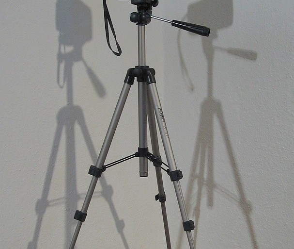
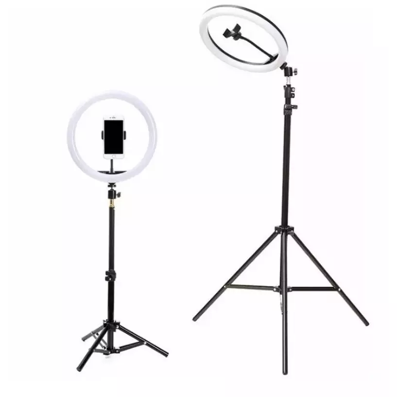
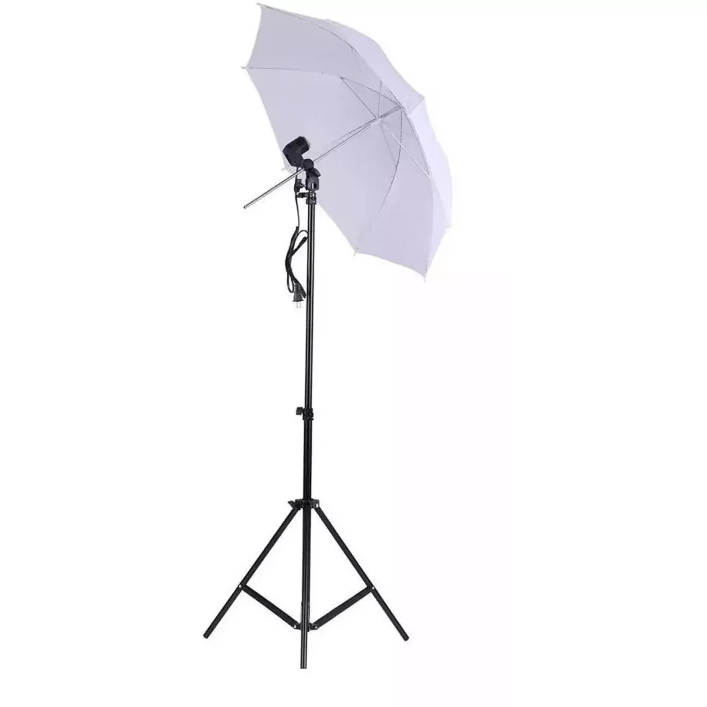

Sony α6100
Sony α6100
α6100
Cámara mirrorless APS-C de alta velocidad con autoenfoque en tiempo real asistido por IA. Ideal para retratos, eventos y fotografía de calle, combinando portabilidad con calidad profesional.
Trípode Pro
Trípode de aluminio ligero con cabeza de bola de 3 ejes y ajuste de altura preciso. Indispensable para larga exposición, fotografía nocturna y composiciones perfectamente estables.

Trípode Pro
Aro de Luz 26cmAro de Luz
Aro de luz LED de 26 cm con trípode incluido y soporte para smartphone. Proporciona iluminación uniforme y suave, ideal para retratos, sesiones de estudio y contenido en video con luz profesional.
Paraguas Difusor
Kit de iluminación de estudio con paraguas difusor traslúcido montado sobre trípode de luz. Crea una luz suave y envolvente que elimina sombras duras, perfecto para sesiones de retrato y fotografía de producto.

Kit Paraguas Difusor